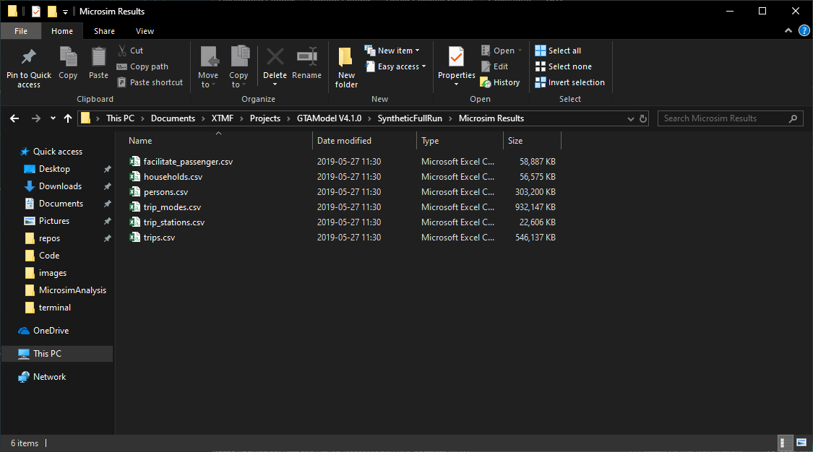

Microsim
The Microsim format allows GTAModel V4 models to record the results of the TASHA/Mode Choice simulations into a set of files that can be imported into many different data analysis tools. A few examples are Microsoft Access, SQL Server, and Pandas. Below is an example directory containing microsim data. Optionally the data can be compressed using the gzip algorithm during a model run.
All times are reported in either "Minutes from Midnight", or optionally as a time stamp in the format H:M[<optional>:S]. The "Minutes From Midnight" allows you to easily add times or durations together where zero is the midnight of the day the simulation starts.

Households.csv (Optional)
This file was added starting in GTAModel V4.1.0. The columns are as follows:
- household_id
- The unique identifier for the household
- home_zone
- weight
- This is the same thing as the household expansion factor in TTS
- persons
- The number of people living within the household
- dwelling_type
- vehicles
- The number of vehicles assigned to the household from the auto ownership model
- income_class
- The income class according to TTS2016 that the household belongs to
Persons.csv
- household_id
- The unique identifier for the household
- person_id
- The unique identifier for the person within the household
- age
- sex
- Currently the options are 'M' or 'F'
- license
- TRUE, or FALSE
- transit_pass
- TRUE, or FALSE
- employment_status
- These statuses match that from the DMG's TTS data guide
- occupation
- These statuses match that from the DMG's TTS data guide
- free_parking
- TRUE, or FALSE
- student_status
- F = Full-time, P = Part-Time, O = Not a student
- work_zone
- If the zone is 0, then they have not been assigned a work zone
- school_zone
- If the zone is 0, then they have not been assigned a school zone
- weight
- The person's expansion factor to scale the agent to the global population
Trips.csv
- household_id
- The unique identifier for the household
- person_id
- The unique identifier for the person within the household
- trip_id
- The unique identifier for the trip for the given person
- o_act
- The activity at the origin of the trip
- o_zone
- The zone number of the trip's origin
- d_act
- The activity at the destination of the trip
- d_zone
- The zone number of the trip's destination
- weight
- The factor to apply to scale this trip to scale the trip for the global population
- This will be the same as the person's weight
Trip_Modes.csv
- household_id
- The unique identifier for the household
- person_id
- The unique identifier for the person within the household
- trip_id
- The unique identifier for the trip for the given person
- mode
- The name of the mode that was used
- o_depart
- The time that the trip started / departed the origin
- d_arrive
- The time that the trip ended / arrived at the destination
- weight
- The number of times that this mode was selected for the given trip
Trip_Stations.csv
- household_id
- The unique identifier for the household
- person_id
- The unique identifier for the person within the household
- trip_id
- The unique identifier for the trip for the given person
- station
- The zone number for the station
- direction
- "auto2transit" or "transit2auto"
- weight
- The number of times that the station was selected
- mode
(XTMF 1.8+)- The mode associated with this station choice. This is required for analyzing PAT/PET modes.
Facilitate_Passenger.csv (Optional)
- household_id
- The unique identifier for the household
- passenger_id
- The unique identifier for the passenger within the household
- passenger_trip_id
- The unique identifier for the trip for the passenger that is being facilitated
- driver_id
- The unique identifier for the driver within the household
- driver_trip_id
- The unique identifier for the trip that the driver is being diverted from in order to facilitate the trip.
- -1 if the driver is facilitating the trip from home
- weight
- The number of times the passenger's trip was facilitated in this manner